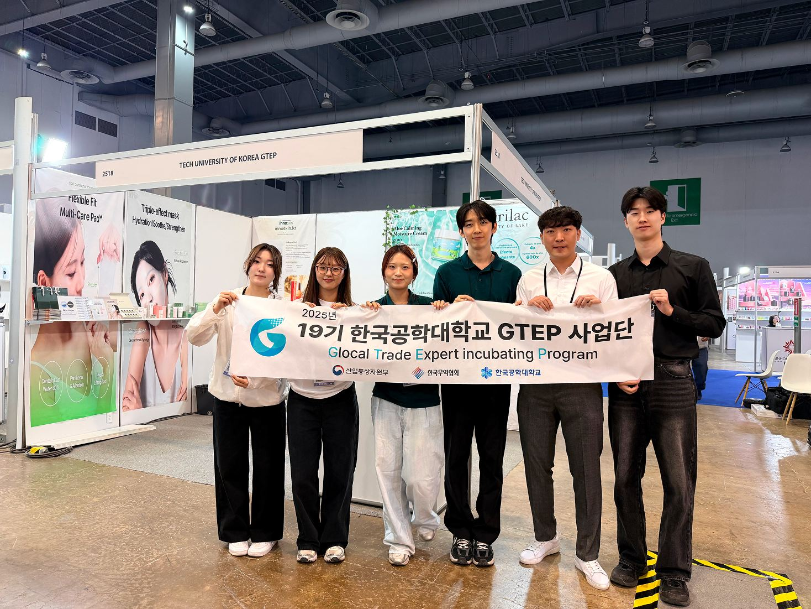
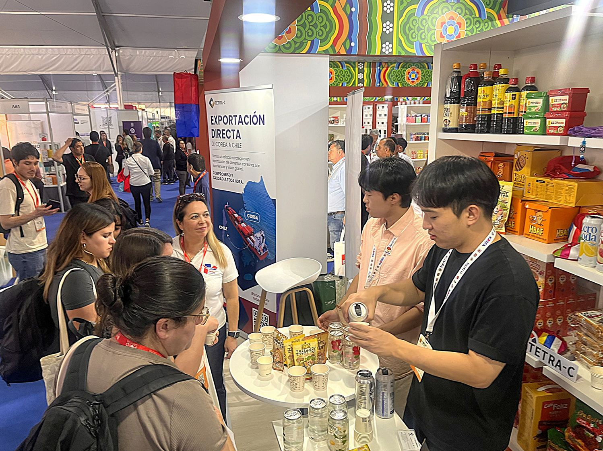
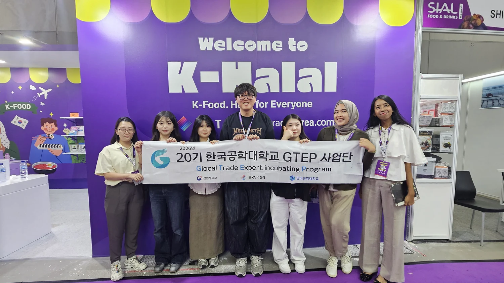
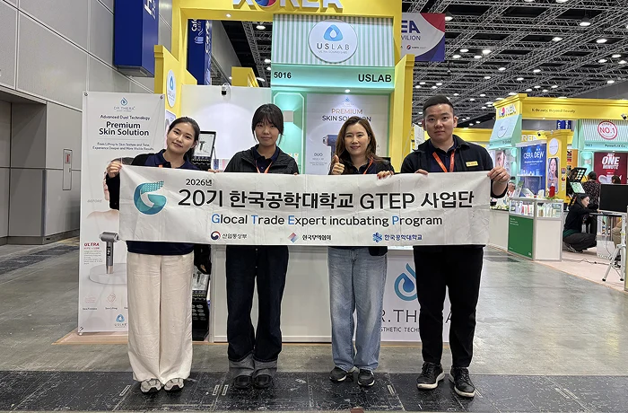
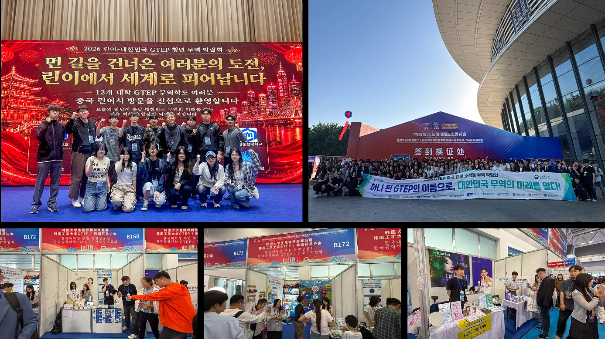

01 / 05
INDONESIA · 2026SIAL Food & Drinks Indonesia
TU GTEP
전체 Field Notes 보기Field Notes
학생과 지역기업이 함께 나간 해외 전시회 현장을 기록합니다.













OUR ACHIEVEMENTS
TU GTEP의 성과
대학 보도로 확인한
GTEP의 현장 기록입니다.
바이어 상담 지원2,065건+
2026년 해외 전시회 10곳 합계
(대학 보도 기준)
교육과정480시간+
15개월 과정 이수 기준
(기초·심화·현장 실습)
사업 운영12년째
2015년부터 운영
2027년 21기 모집
해외 현장17개
국가·지역
(대학 보도 기준, 2019–2026)
NOTICE
전체보기공지사항
사업단의 최신 소식과
주요 일정을 안내합니다.
- 모집2027년 제21기 GTEP 참여학생 모집 안내
- 활동인도네시아 SIAL 전시회 참가, 바이어 상담 275건 지원
- 활동시흥 기업과 도쿄 스페셜티 커피 전시회 참가
- 성과코스모뷰티 말레이시아, 바이어 상담 25건 이상

INDUSTRY-ACADEMIA
산학협력 문의
TU GTEP과 함께 세계 시장으로 나아갈
지역기업을 기다립니다.
- 해외 전시회 동행
- 바이어 상담 지원
- 시장조사·온라인 마케팅